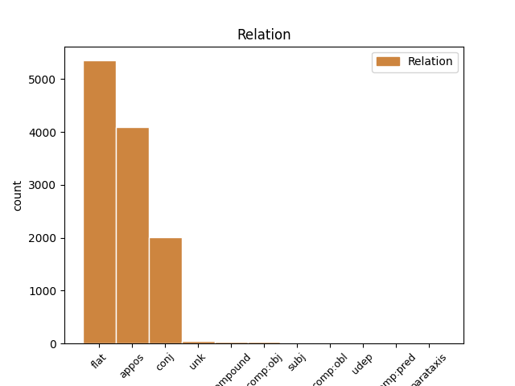
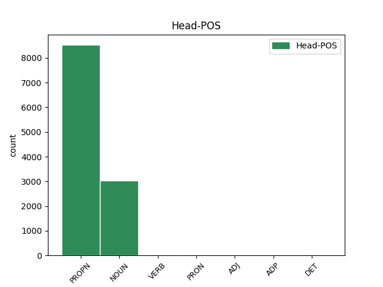
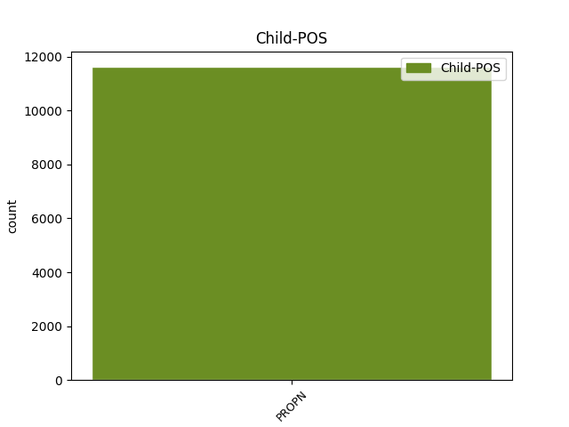

Distribution of features within this leaf



Agreement Rules sorted by frequency.
- When the dependent token is the flat multiword expression(flat) of the head token, and the dependent token is PROPN.
1 Schon _ _ _ _ 0 _ _ _
2 früh _ _ _ _ 0 _ _ _
3 entwickelte _ _ _ _ 0 _ _ _
4 er _ _ _ _ 0 _ _ _
5 eine _ _ _ _ 0 _ _ _
6 Zuneigung _ _ _ _ 0 _ _ _
7 zu _ _ _ _ 0 _ _ _
8 den _ _ _ _ 0 _ _ _
9 Meteora Meteora PROPN NN Case=Dat|Gender=Masc|Number=Plur 0 _ _ _
10 - _ _ _ _ 0 _ _ _
11 Klöstern Kloster PROPN NN Case=Dat|Gender=Masc|Number=Plur 9 flat _ SpaceAfter=No
12 , _ _ _ _ 0 _ _ _
13 von _ _ _ _ 0 _ _ _
14 denen _ _ _ _ 0 _ _ _
15 einige _ _ _ _ 0 _ _ _
16 unter _ _ _ _ 0 _ _ _
17 der _ _ _ _ 0 _ _ _
18 Herrschaft _ _ _ _ 0 _ _ _
19 seines _ _ _ _ 0 _ _ _
20 Vaters _ _ _ _ 0 _ _ _
21 entstanden _ _ _ _ 0 _ _ _
22 und _ _ _ _ 0 _ _ _
23 die _ _ _ _ 0 _ _ _
24 auch _ _ _ _ 0 _ _ _
25 er _ _ _ _ 0 _ _ _
26 finanziell _ _ _ _ 0 _ _ _
27 unterstützte _ _ _ _ 0 _ _ _
28 . _ _ _ _ 0 _ _ _
1 Küchendeutsch _ _ _ _ 0 _ _ _
2 wird _ _ _ _ 0 _ _ _
3 heute _ _ _ _ 0 _ _ _
4 nur _ _ _ _ 0 _ _ _
5 noch _ _ _ _ 0 _ _ _
6 von _ _ _ _ 0 _ _ _
7 etwa _ _ _ _ 0 _ _ _
8 15.000 _ _ _ _ 0 _ _ _
9 hauptsächlich _ _ _ _ 0 _ _ _
10 älteren _ _ _ _ 0 _ _ _
11 Namibiern _ _ _ _ 0 _ _ _
12 und _ _ _ _ 0 _ _ _
13 früheren _ _ _ _ 0 _ _ _
14 Angestellten _ _ _ _ 0 _ _ _
15 der _ _ _ _ 0 _ _ _
16 ehemaligen _ _ _ _ 0 _ _ _
17 Kolonialherren _ _ _ _ 0 _ _ _
18 verwendet _ _ _ _ 0 _ _ _
19 , _ _ _ _ 0 _ _ _
20 wovon _ _ _ _ 0 _ _ _
21 sich _ _ _ _ 0 _ _ _
22 auch _ _ _ _ 0 _ _ _
23 der _ _ _ _ 0 _ _ _
24 Name Name NOUN NN Case=Nom|Gender=Masc|Number=Sing 0 _ _ _
25 " _ _ _ _ 0 _ _ _
26 Küchendeutsch Küchendeutsch PROPN NN Case=Nom|Gender=Masc|Number=Sing 24 appos _ SpaceAfter=No
27 " _ _ _ _ 0 _ _ _
28 ableitet _ _ _ _ 0 _ _ _
29 . _ _ _ _ 0 _ _ _
1 Brănişteanu _ _ _ _ 0 _ _ _
2 wirkte _ _ _ _ 0 _ _ _
3 u.a. _ _ _ _ 0 _ _ _
4 bei _ _ _ _ 0 _ _ _
5 den _ _ _ _ 0 _ _ _
6 Luzerner _ _ _ _ 0 _ _ _
7 Festspielen _ _ _ _ 0 _ _ _
8 1974 _ _ _ _ 0 _ _ _
9 , _ _ _ _ 0 _ _ _
10 Glyndebourne _ _ _ _ 0 _ _ _
11 Festival _ _ _ _ 0 _ _ _
12 1977 _ _ _ _ 0 _ _ _
13 , _ _ _ _ 0 _ _ _
14 Ludwigsburger _ _ _ _ 0 _ _ _
15 Festspielen _ _ _ _ 0 _ _ _
16 1981 _ _ _ _ 0 _ _ _
17 , _ _ _ _ 0 _ _ _
18 Wexford Wexford PROPN NE Case=Nom|Gender=Masc|Number=Sing 0 _ _ _
19 Festival _ _ _ _ 0 _ _ _
20 1973 _ _ _ _ 0 _ _ _
21 , _ _ _ _ 0 _ _ _
22 Athener _ _ _ _ 0 _ _ _
23 Festspielen Festspiel PROPN NN Case=Nom|Gender=Neut|Number=Sing 18 conj _ _
24 1979 _ _ _ _ 0 _ _ _
25 , _ _ _ _ 0 _ _ _
26 bei _ _ _ _ 0 _ _ _
27 den _ _ _ _ 0 _ _ _
28 Münchner _ _ _ _ 0 _ _ _
29 Opernfestspielen _ _ _ _ 0 _ _ _
30 1978 _ _ _ _ 0 _ _ _
31 und _ _ _ _ 0 _ _ _
32 bei _ _ _ _ 0 _ _ _
33 den _ _ _ _ 0 _ _ _
34 Zürcher _ _ _ _ 0 _ _ _
35 Festspielen _ _ _ _ 0 _ _ _
36 1980 _ _ _ _ 0 _ _ _
37 und _ _ _ _ 0 _ _ _
38 1981 _ _ _ _ 0 _ _ _
39 mit _ _ _ _ 0 _ _ _
40 . _ _ _ _ 0 _ _ _
1 Es _ _ _ _ 0 _ _ _
2 erfolgten _ _ _ _ 0 _ _ _
3 auch _ _ _ _ 0 _ _ _
4 Anrufe _ _ _ _ 0 _ _ _
5 bei _ _ _ _ 0 _ _ _
6 in _ _ _ _ 0 _ _ _
7 der _ _ _ _ 0 _ _ _
8 " _ _ _ _ 0 _ _ _
9 Gaststätte _ _ _ _ 0 _ _ _
10 zu _ _ _ _ 0 _ _ _
11 der _ _ _ _ 0 _ _ _
12 F104 _ _ _ _ 0 _ _ _
13 " _ _ _ _ 0 _ _ _
14 in _ _ _ _ 0 _ _ _
15 Kerpen _ _ _ _ 0 _ _ _
16 - _ _ _ _ 0 _ _ _
17 Niederbolheim _ _ _ _ 0 _ _ _
18 bei _ _ _ _ 0 _ _ _
19 Köln _ _ _ _ 0 _ _ _
20 , _ _ _ _ 0 _ _ _
21 wo _ _ _ _ 0 _ _ _
22 der _ _ _ _ 0 _ _ _
23 erste _ _ _ _ 0 _ _ _
24 Paul Paul PROPN NN Case=Nom|Gender=Masc|Number=Sing 28 compound _ _
25 - _ _ _ _ 0 _ _ _
26 Panzer _ _ _ _ 0 _ _ _
27 - _ _ _ _ 0 _ _ _
28 Fanclub Fanclub NOUN NN Case=Nom|Gender=Masc|Number=Sing 0 _ _ _
29 Deutschlands _ _ _ _ 0 _ _ _
30 beheimatet _ _ _ _ 0 _ _ _
31 ist _ _ _ _ 0 _ _ _
32 . _ _ _ _ 0 _ _ _
1 August August PROPN NN Case=Nom|Gender=Masc|Number=Sing 14 unk _ _
2 1888 _ _ _ _ 0 _ _ _
3 in _ _ _ _ 0 _ _ _
4 St _ _ _ _ 0 _ _ _
5 Marychurch _ _ _ _ 0 _ _ _
6 bei _ _ _ _ 0 _ _ _
7 Torquay _ _ _ _ 0 _ _ _
8 , _ _ _ _ 0 _ _ _
9 England _ _ _ _ 0 _ _ _
10 ) _ _ _ _ 0 _ _ _
11 war _ _ _ _ 0 _ _ _
12 ein _ _ _ _ 0 _ _ _
13 englischer _ _ _ _ 0 _ _ _
14 Naturforscher Naturforscher NOUN NN Case=Nom|Gender=Masc|Number=Sing 0 _ _ _
15 . _ _ _ _ 0 _ _ _
1 Das _ _ _ _ 0 _ _ _
2 für _ _ _ _ 0 _ _ _
3 Jesus _ _ _ _ 0 _ _ _
4 reserviert _ _ _ _ 0 _ _ _
5 gebliebene _ _ _ _ 0 _ _ _
6 Wort _ _ _ _ 0 _ _ _
7 " _ _ _ _ 0 _ _ _
8 Menschensohn _ _ _ _ 0 _ _ _
9 " _ _ _ _ 0 _ _ _
10 drückt _ _ _ _ 0 _ _ _
11 eine _ _ _ _ 0 _ _ _
12 neue _ _ _ _ 0 _ _ _
13 , _ _ _ _ 0 _ _ _
14 das _ _ _ _ 0 _ _ _
15 ganze _ _ _ _ 0 _ _ _
16 Neue _ _ _ _ 0 _ _ _
17 Testament Testament PROPN NN Case=Acc|Gender=Neut|Number=Sing 18 comp:obj _ _
18 prägende prägend ADJ ADJA Case=Acc|Gender=Fem|Number=Sing 0 _ _ _
19 Vision _ _ _ _ 0 _ _ _
20 des _ _ _ _ 0 _ _ _
21 Einsseins _ _ _ _ 0 _ _ _
22 von _ _ _ _ 0 _ _ _
23 Gott _ _ _ _ 0 _ _ _
24 und _ _ _ _ 0 _ _ _
25 Mensch _ _ _ _ 0 _ _ _
26 aus _ _ _ _ 0 _ _ _
27 : _ _ _ _ 0 _ _ _
28 " _ _ _ _ 0 _ _ _
29 in _ _ _ _ 0 _ _ _
30 dem _ _ _ _ 0 _ _ _
31 Rätselwort _ _ _ _ 0 _ _ _
32 von _ _ _ _ 0 _ _ _
33 dem _ _ _ _ 0 _ _ _
34 Menschensohn _ _ _ _ 0 _ _ _
35 begegnet _ _ _ _ 0 _ _ _
36 uns _ _ _ _ 0 _ _ _
37 ganz _ _ _ _ 0 _ _ _
38 dicht _ _ _ _ 0 _ _ _
39 das _ _ _ _ 0 _ _ _
40 Ureigene _ _ _ _ 0 _ _ _
41 der _ _ _ _ 0 _ _ _
42 Gestalt _ _ _ _ 0 _ _ _
43 Jesu _ _ _ _ 0 _ _ _
44 , _ _ _ _ 0 _ _ _
45 seiner _ _ _ _ 0 _ _ _
46 Sendung _ _ _ _ 0 _ _ _
47 und _ _ _ _ 0 _ _ _
48 seines _ _ _ _ 0 _ _ _
49 Seins _ _ _ _ 0 _ _ _
50 . _ _ _ _ 0 _ _ _
1 Der _ _ _ _ 0 _ _ _
2 Lux Lux PROPN NN Case=Nom|Gender=Masc|Number=Sing 5 subj _ _
3 - _ _ _ _ 0 _ _ _
4 Konzern _ _ _ _ 0 _ _ _
5 beschäftigte beschäftigen VERB ADJA Case=Nom|Gender=Masc|Number=Sing 0 _ _ _
6 Ende _ _ _ _ 0 _ _ _
7 2009 _ _ _ _ 0 _ _ _
8 weltweit _ _ _ _ 0 _ _ _
9 rund _ _ _ _ 0 _ _ _
10 780 _ _ _ _ 0 _ _ _
11 Festangestellte _ _ _ _ 0 _ _ _
12 und _ _ _ _ 0 _ _ _
13 5.950 _ _ _ _ 0 _ _ _
14 Fachberater _ _ _ _ 0 _ _ _
15 . _ _ _ _ 0 _ _ _
1 Ihre _ _ _ _ 0 _ _ _
2 dritte _ _ _ _ 0 _ _ _
3 Single _ _ _ _ 0 _ _ _
4 Let Let PROPN NE Case=Nom|Gender=Fem|Number=Sing 0 _ _ _
5 's _ _ _ _ 0 _ _ _
6 Make Make PROPN NE Case=Nom|Gender=Fem|Number=Sing 4 comp:pred _ _
7 History _ _ _ _ 0 _ _ _
8 stammt _ _ _ _ 0 _ _ _
9 aus _ _ _ _ 0 _ _ _
10 der _ _ _ _ 0 _ _ _
11 Feder _ _ _ _ 0 _ _ _
12 von _ _ _ _ 0 _ _ _
13 Team3 _ _ _ _ 0 _ _ _
14 . _ _ _ _ 0 _ _ _
1 Das _ _ _ _ 0 _ _ _
2 St. St. PROPN NE Case=Nom|Gender=Neut|Number=Sing 7 comp:obl _ _
3 Kilian _ _ _ _ 0 _ _ _
4 und _ _ _ _ 0 _ _ _
5 St. _ _ _ _ 0 _ _ _
6 Franziskus _ _ _ _ 0 _ _ _
7 geweihte geweiht ADJ ADJA Case=Nom|Gender=Masc|Number=Sing 0 _ _ _
8 Kloster _ _ _ _ 0 _ _ _
9 wurde _ _ _ _ 0 _ _ _
10 1615 _ _ _ _ 0 _ _ _
11 durch _ _ _ _ 0 _ _ _
12 Julius _ _ _ _ 0 _ _ _
13 Echter _ _ _ _ 0 _ _ _
14 von _ _ _ _ 0 _ _ _
15 Mespelbrunn _ _ _ _ 0 _ _ _
16 , _ _ _ _ 0 _ _ _
17 Bischof _ _ _ _ 0 _ _ _
18 von _ _ _ _ 0 _ _ _
19 Würzburg _ _ _ _ 0 _ _ _
20 gegründet _ _ _ _ 0 _ _ _
21 . _ _ _ _ 0 _ _ _
1 Ausgabe Ausgabe NOUN NN Case=Nom|Gender=Fem|Number=Sing 0 _ _ _
2 2003 _ _ _ _ 0 _ _ _
3 -- _ _ _ _ 0 _ _ _
4 Queenstown Queenstown PROPN NN Case=Nom|Gender=Fem|Number=Sing 1 parataxis _ SpaceAfter=No
5 : _ _ _ _ 0 _ _ _
6 Municipality _ _ _ _ 0 _ _ _
7 of _ _ _ _ 0 _ _ _
8 Queenstown _ _ _ _ 0 _ _ _
9 . _ _ _ _ 0 _ _ _
1 Jedoch _ _ _ _ 0 _ _ _
2 blieb _ _ _ _ 0 _ _ _
3 die _ _ _ _ 0 _ _ _
4 als _ _ _ _ 0 _ _ _
5 " _ _ _ _ 0 _ _ _
6 Jawn Jawn PROPN NN Case=Nom|Gender=Masc|Number=Sing 9 udep _ _
7 Henry _ _ _ _ 0 _ _ _
8 " _ _ _ _ 0 _ _ _
9 bezeichnete bezeichnet ADJ ADJA Case=Nom|Gender=Fem|Number=Sing 0 _ _ _
10 Lokomotive _ _ _ _ 0 _ _ _
11 ein _ _ _ _ 0 _ _ _
12 Einzelstück _ _ _ _ 0 _ _ _
13 und _ _ _ _ 0 _ _ _
14 wurde _ _ _ _ 0 _ _ _
15 an _ _ _ _ 0 _ _ _
16 dem _ _ _ _ 0 _ _ _
17 31 _ _ _ _ 0 _ _ _
18 . _ _ _ _ 0 _ _ _
Disagree Examples:
1 Ich _ _ _ _ 0 _ _ _
2 bin _ _ _ _ 0 _ _ _
3 seit _ _ _ _ 0 _ _ _
4 längerer _ _ _ _ 0 _ _ _
5 Zeit _ _ _ _ 0 _ _ _
6 zu _ _ _ _ 0 _ _ _
7 der _ _ _ _ 0 _ _ _
8 Behandlung _ _ _ _ 0 _ _ _
9 verschiedenster _ _ _ _ 0 _ _ _
10 " _ _ _ _ 0 _ _ _
11 Leiden _ _ _ _ 0 _ _ _
12 " _ _ _ _ 0 _ _ _
13 in _ _ _ _ 0 _ _ _
14 der _ _ _ _ 0 _ _ _
15 Physiotherapieraxis Physiotherapieraxis NOUN NN Case=Dat|Gender=Fem|Number=Sing 0 _ _ _
16 " _ _ _ _ 0 _ _ _
17 Gaby Gaby PROPN NE Case=Nom|Gender=Fem|Number=Sing 15 appos _ _
18 Montag _ _ _ _ 0 _ _ _
19 " _ _ _ _ 0 _ _ _
20 in _ _ _ _ 0 _ _ _
21 dem _ _ _ _ 0 _ _ _
22 Vital _ _ _ _ 0 _ _ _
23 Center _ _ _ _ 0 _ _ _
24 und _ _ _ _ 0 _ _ _
25 kann _ _ _ _ 0 _ _ _
26 ausschließlich _ _ _ _ 0 _ _ _
27 Positives _ _ _ _ 0 _ _ _
28 berichten _ _ _ _ 0 _ _ _
29 ! _ _ _ _ 0 _ _ _
1 Ich _ _ _ _ 0 _ _ _
2 bin _ _ _ _ 0 _ _ _
3 seit _ _ _ _ 0 _ _ _
4 längerer _ _ _ _ 0 _ _ _
5 Zeit _ _ _ _ 0 _ _ _
6 zu _ _ _ _ 0 _ _ _
7 der _ _ _ _ 0 _ _ _
8 Behandlung _ _ _ _ 0 _ _ _
9 verschiedenster _ _ _ _ 0 _ _ _
10 " _ _ _ _ 0 _ _ _
11 Leiden _ _ _ _ 0 _ _ _
12 " _ _ _ _ 0 _ _ _
13 in _ _ _ _ 0 _ _ _
14 der _ _ _ _ 0 _ _ _
15 Physiotherapieraxis _ _ _ _ 0 _ _ _
16 " _ _ _ _ 0 _ _ _
17 Gaby Gaby PROPN NE Case=Nom|Gender=Fem|Number=Sing 0 _ _ _
18 Montag Montag PROPN NE Case=Acc|Gender=Masc|Number=Sing 17 flat _ SpaceAfter=No
19 " _ _ _ _ 0 _ _ _
20 in _ _ _ _ 0 _ _ _
21 dem _ _ _ _ 0 _ _ _
22 Vital _ _ _ _ 0 _ _ _
23 Center _ _ _ _ 0 _ _ _
24 und _ _ _ _ 0 _ _ _
25 kann _ _ _ _ 0 _ _ _
26 ausschließlich _ _ _ _ 0 _ _ _
27 Positives _ _ _ _ 0 _ _ _
28 berichten _ _ _ _ 0 _ _ _
29 ! _ _ _ _ 0 _ _ _
1 Unser _ _ _ _ 0 _ _ _
2 Erlebnis _ _ _ _ 0 _ _ _
3 auf _ _ _ _ 0 _ _ _
4 dem _ _ _ _ 0 _ _ _
5 Leuchtturm Leuchtturm NOUN NN Case=Dat|Gender=Masc|Number=Sing 0 _ _ _
6 Roter rot PROPN ADJA Case=Nom|Gender=Masc|Number=Sing 5 appos _ _
7 Sand _ _ _ _ 0 _ _ _
8 war _ _ _ _ 0 _ _ _
9 einmalig _ _ _ _ 0 _ _ _
10 und _ _ _ _ 0 _ _ _
11 ein _ _ _ _ 0 _ _ _
12 tolles _ _ _ _ 0 _ _ _
13 Erlebnis _ _ _ _ 0 _ _ _
14 . _ _ _ _ 0 _ _ _
1 Ich _ _ _ _ 0 _ _ _
2 kann _ _ _ _ 0 _ _ _
3 Kay Kay PROPN NE Case=Nom|Gender=Masc|Number=Sing 0 _ _ _
4 Jays Jays PROPN NE Case=Gen|Gender=Masc|Number=Sing 3 flat _ _
5 nur _ _ _ _ 0 _ _ _
6 jedem _ _ _ _ 0 _ _ _
7 vollstens _ _ _ _ 0 _ _ _
8 empfehlen _ _ _ _ 0 _ _ _
9 . _ _ _ _ 0 _ _ _
1 In _ _ _ _ 0 _ _ _
2 der _ _ _ _ 0 _ _ _
3 ComputerAkademie _ _ _ _ 0 _ _ _
4 Rosenheim _ _ _ _ 0 _ _ _
5 werden _ _ _ _ 0 _ _ _
6 zertifizierte _ _ _ _ 0 _ _ _
7 Trainings _ _ _ _ 0 _ _ _
8 zu _ _ _ _ 0 _ _ _
9 den _ _ _ _ 0 _ _ _
10 Microsoft Microsoft PROPN NE Case=Nom|Number=Sing 0 _ _ _
11 Office Office PROPN NN Case=Dat|Gender=Masc|Number=Plur 10 flat _ _
12 - _ _ _ _ 0 _ _ _
13 Produkten _ _ _ _ 0 _ _ _
14 angeboten _ _ _ _ 0 _ _ _
15 . _ _ _ _ 0 _ _ _